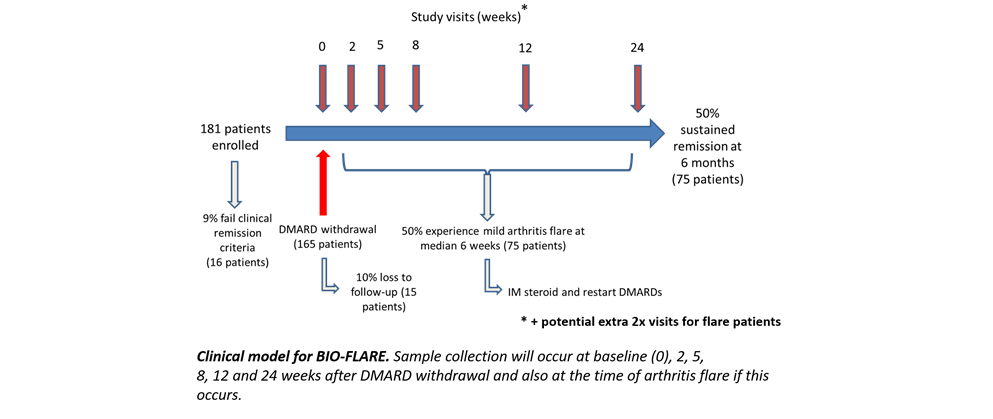

At Newcastle, we will be studying the cellular immune dysregulation in peripheral blood that is associated with flare.
By the end of the trial period, we aim to have 150 longitudinal time series of peripheral whole blood samples from patients who either flare during their time in the study or who stay in remission until the endpoint. The samples will be fixed soon after being taken in the clinic and will therefore represent an accurate 'snapshot' of the immune phenotype in the peripheral blood at the time of sampling. This is a significant advantage over working with isolated cells because biologically relevant information, particularly on immune signalling, is lost during sample processing.

The blood samples will be collated at Newcastle and then stained and analysed in batches. The samples will be analysed by multicolour flow cytometry, for which we have developed three panels totalling over 35 extracellular and intracellular markers focused on the T cell, B cell and DC populations. We have several phosphoproteins on our panels – including phospho-STAT3, p-ERK and p-NFkB - and we are particularly interested to see whether there is a phosphoprotein signature within a particular immune cell subset that is associated with flare. PBMC will also be isolated from peripheral blood taken at each sampling point. These samples will be subjected to much deeper phenotyping by mass cytometry. We will perform detailed subsetting of T cells, B cells and DC and co-stain for intracellular cytokines and transcription factors.
The data resulting from the flow and mass cytometry streams will be analysed to see whether changes in the abundance of immune cell subsets, their activation status, and/or signalling phenotype are associated with disease flare.